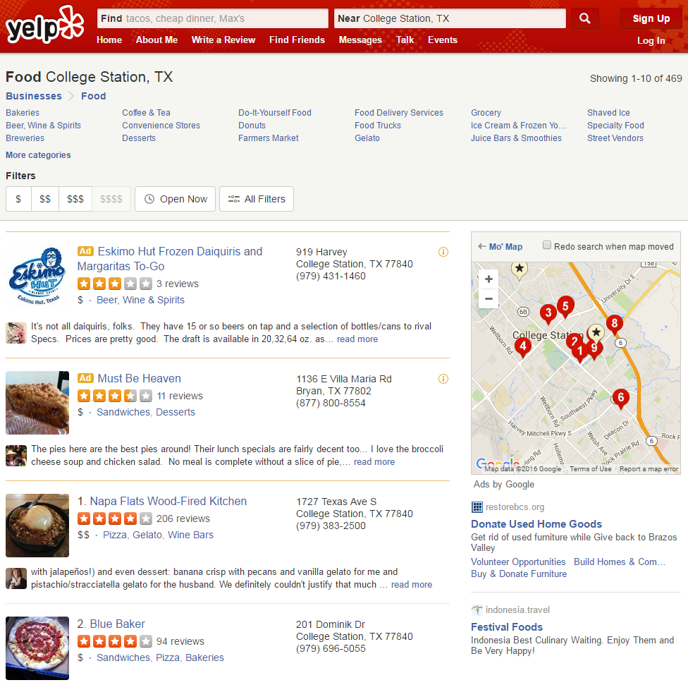
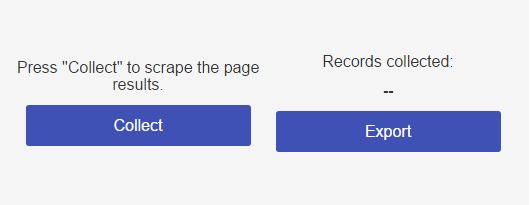
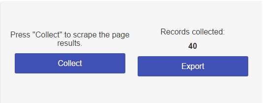
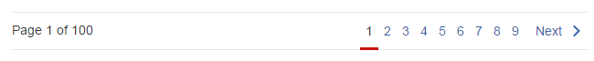
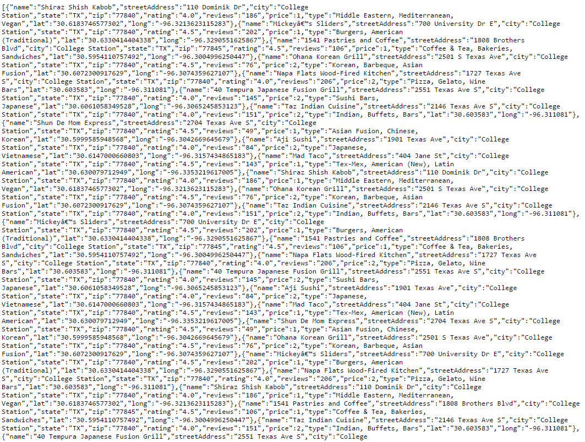
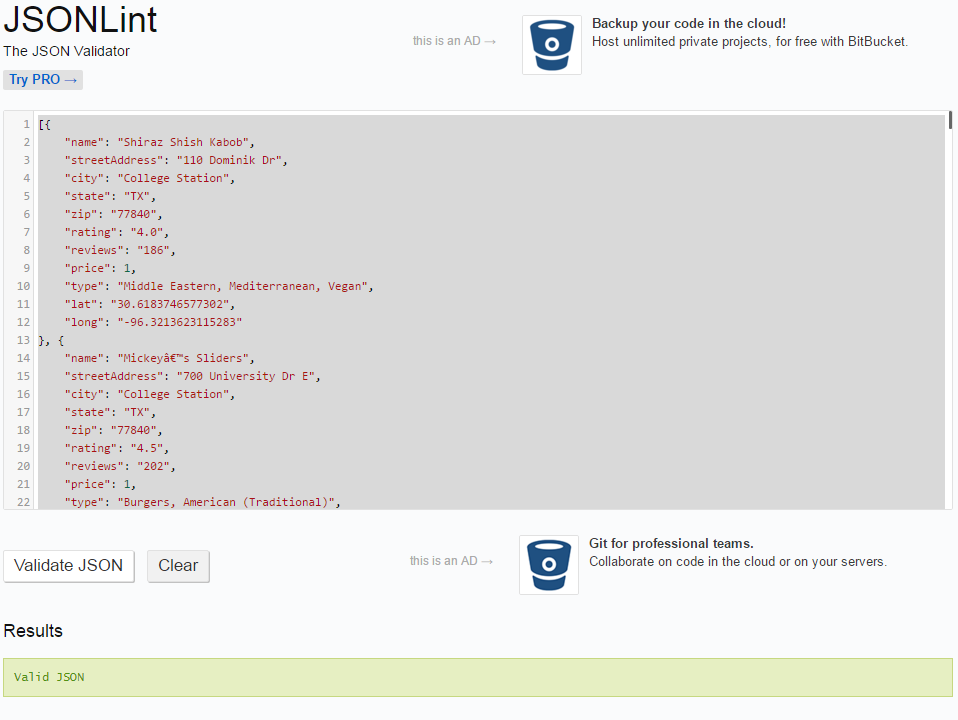
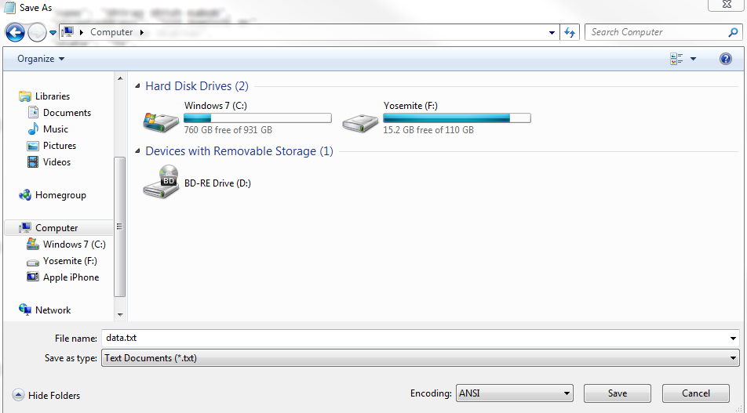

Yelp ScraperJS was developed and tested on the latest Chrome. To use, drag the button below to your bookmarks bar to create a launcher. Then, click on the created bookmark to inject the script.
Yelp Scraper RunDon't have Google Chrome installed? Get it here.
Here's what to do after you've added the launcher to your bookmarks bar.
Step 1: Generate a list of businesses for either Bryan or College Station. We will need both cities, so pick one to start with. Then filter those results by Food.
Example:
Step 2: Click on the bookmark you crated to run the script. You MUST be on a listings page else the script will not run. You will be presented with a GUI on the bottom right corner of the screen that looks like this:
Once the page has fully rendered the results, press the "Collect" button to scrape the page results. There may be a slight delay before the counter starts reflecting the number of objects collected due to geolocation requests being done to a remote server, so only one press per page is needed otherwise it may lead to mass duplicates.
The counter on the right side of the GUI will reflect the total number of objects scraped. Since there are 10 results per page, we can expect a maximum of 10 scraped objects per page. It's possible to get a number that is less than 10 even if there are 10 results on the page. This is a rare bug, but not one that is too important since we'll be merging datasets.
Once the page has been scraped, find the pagination element and continue to the next page and repeat until all pages have been scraped.
Reference pagination element:
Since Yelp does not refresh the entire page to fetch the next set of results, we can exploit this to keep the scraper GUI live accross result pages. However, this also means you should not refresh or close the page since the objects are stored in a temporary local cache that exists only for the duration of the session. Should the page be refreshed or closed, scraping will have to begin from page 1 again.
Step 3: Once all pages are scraped, it's time to export the data set. Click on the "Export" button. It should open a tab with a bunch of unformatted inline text that looks similar to this:
Select all of the text using Crl + A (Windows) or Cmd + A (OSX), copy using Crl + C (Windows) or Cmd + C (OSX), and paste into the JSONLint tool input box. Then, click on the "Validate JSON" button to validate and format the markup. Focus the input box by clicking on it and select all of the formatted text.
Open Wordpad (not Notepad. Notepad is a rich text editor which preserves formatting special characters and we don't need them) or TextEdit (OSX) and paste the formatted text. Save the data as a plain text file with the extension .txt
